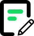
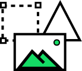
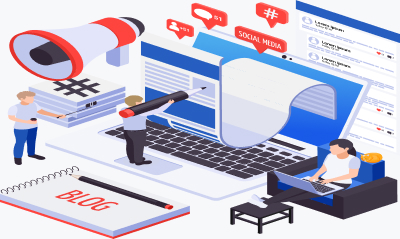

-

공식블로그
-
체험단
-

SNS컨텐츠
아직도 단순히 노출만 하고 계신가요?
시작과 끝, 하나도 놓치지 않는 상상이상마케팅의 바이럴 최적화 전략은 이렇습니다.

Marketing Scheduling
상상이상마케팅은 분양별 전문 마케터 매칭을 통해 자사 상황 및 광고 현황에 대한 분석 후,
맞춤 제안을 통해 광고 전략을 수립합니다.
STEP 1
광고 운영 상담

STEP 2
위젯/배너 제작
STEP 3
월간계획표

STEP 4
컨텐츠 작성

STEP 5
이미지 제작
STEP 6
서로 이웃관리

공식블로그
소비자에 의한 선택적 노출로 브랜드의 신뢰도를 높이고 소비자들이 자발적으로 컨텐츠를 찾기 때문에 마케팅 메세지 촉진에 도움이 되는 마케팅
체험단
블로거가 직접 상품 또는 서비스 및 용역을 체험 한 뒤 블로거 스스로 체험한 리뷰 그대로 포스팅에 담아주는 마케팅

SNS컨텐츠
이용자의 정보 탐색 의도가 깊은 키워드에 대해 해당 분야의 전문가인 광고주가 블로그, 포스트, 카페 등의 컨텐츠를 이용해 보다 정확하고 신뢰성 있는 정보를 제공하는 광고 상품
언론 홍보
언론을 통한 보도자료 송출, 인터뷰 등 언론사를 통한 광고상품